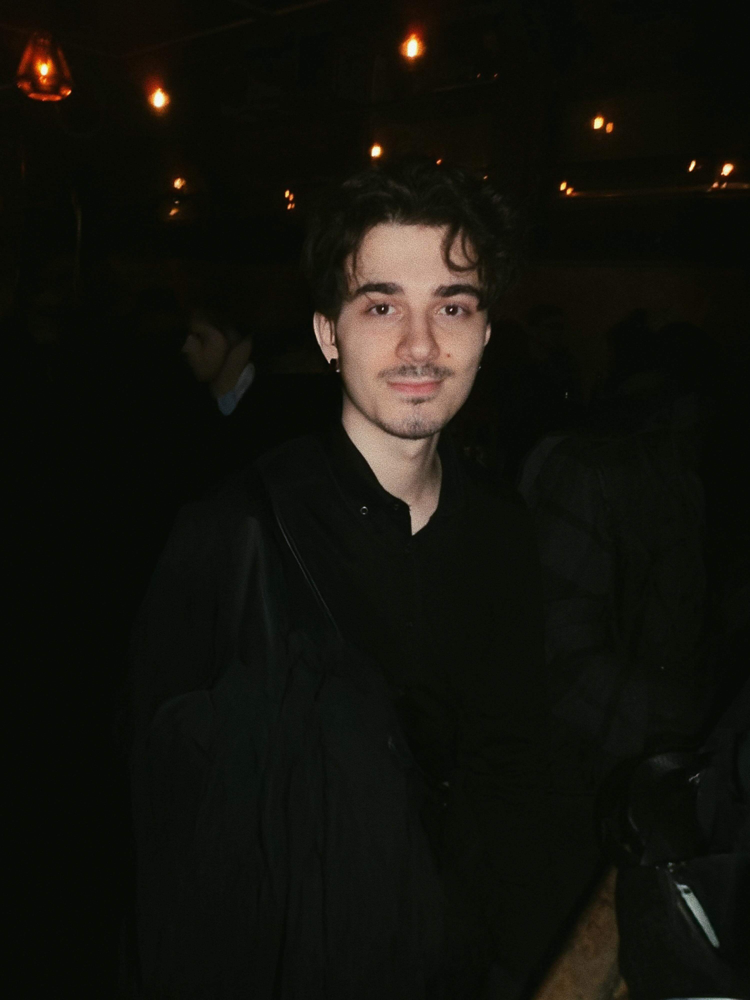
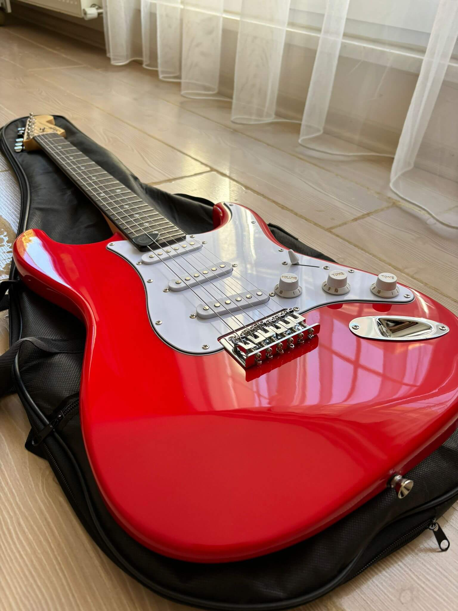
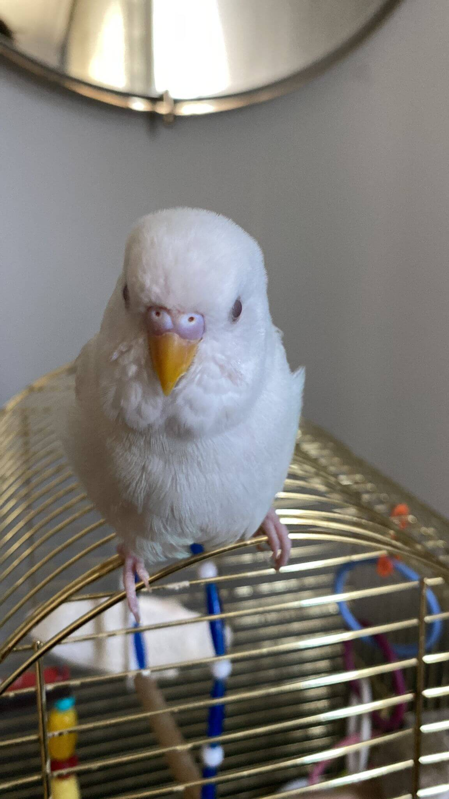

Hakkımda
Ben Turgut Can Taşkaya. Front-End geliştirme alanında kendimi geliştirmeye odaklanıyorum. Web arayüzlerini daha modern, işlevsel ve kullanıcı dostu hale getirmek için güncel teknolojilerle ilgileniyorum.
Eğitim
Şu anda Frontendokulu üzerinden Front-End Development eğitimi alıyorum. Ayrıca ikinci üniversitem Anadolu Üniversitesi Web Tasarımı ve Kodlama bölümünde eğitimime devam ediyorum.
Hobilerim
Spor yapmayı, yeni teknolojiler öğrenmeyi ve elektronik gitar çalmayı seviyorum. Ayrıca Beşiktaş ile ilgili içerikler üretmek de ilgilendiğim bir alan.
Evcil Hayvanım ☺️
Evde Kartopu adında sevimli bir kuşum var. Boş zamanlarımda onunla vakit geçirmeye bayılıyorum.


